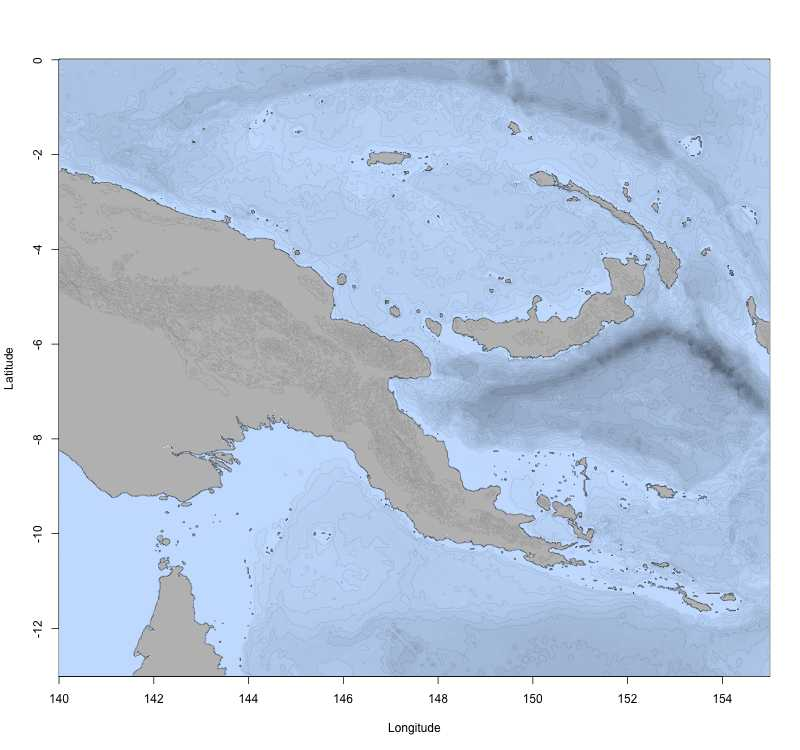
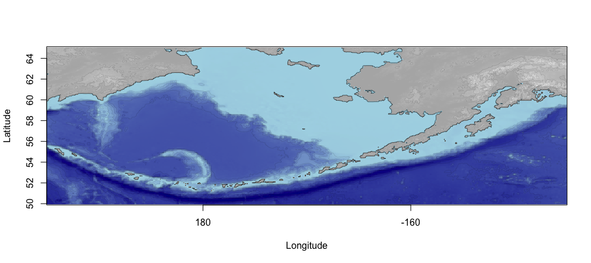
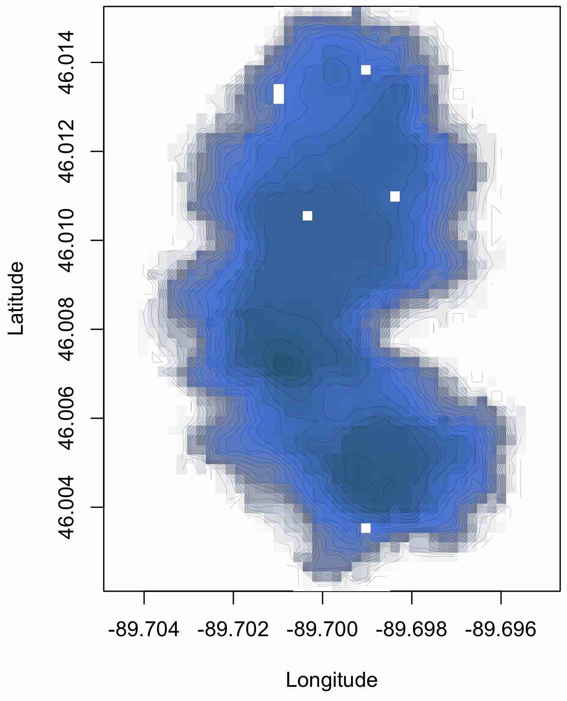

library(marmap2)
papoue <- getNOAA.bathy(lon1 = 140, lon2 = 155,
lat1 = -13, lat2 = 0, resolution = 10)Making and using bathymetric maps in R with marmap
Introduction
In this vignette we introduce marmap , a package designed for manipulating bathymetric data in R. marmap uses simple latitude-longitude-depth data in ascii format and takes advantage of the advanced plotting tools available in R to build publication-quality bathymetric maps. Functions to query data (bathymetry, sampling information…) directly by clicking on marmap maps are available. Bathymetric and topographic data can also be used to constrain the calculation of realistic shortest path distances. Such information can be used in molecular ecology, for example, to evaluate genetic isolation by distance in a spatially-explicit framework.
A quick tutorial
In this tutorial, we will import publicly available data and produce bathymetric maps of Papua New Guinea.
Getting data into R
Launch R. Navigate to your working directory (for example, with setwd()). Then launch the marmap package. The simplest way to get bathymetric data into R for use with marmap is to use the getNOAA.bathy() function. It queries the ETOPO 2022 dataset hosted on the NOAA server, based on coordinates and a resolution given by the user (please note that this function depends on the availability of the NOAA server). In one line, we can get the data into R and start plotting:
When the argument keep (defaults to FALSE) is set to TRUE, the downloaded data are saved into a file within your current working directory. If an identical query is performed several times (i.e. using identical latitudes, longitudes and resolution), getNOAA.bathy() will load data from the file previously written to the disk instead of querying the NOAA database again. This behavior should be used preferentially to reduce the number of uncessary queries to the NOAA website and to reduce data load time.
summary.bathy() helps you check the data ; because bathy is a class, and R an object-oriented language, you just have to use summary(). R will recognize that you are feeding summary() an object of class bathy. This is also true for plot.bathy() and plot().
summary(papoue)Plotting bathymetric data
We can now use plot() to map the data. You can see that the 10 minute resolution is a bit rough, but enough to demonstrate how marmap works (to increase the resolution, simply decrease the value for the resolution argument).
plot(papoue)We can now use some of the options of plot.bathy() to make the map more informative. First, we can plot a heat map, using the built in color palette. We can also add a scale in kilometers.
plot(papoue, image = TRUE)
scaleBathy(papoue, deg = 2, x = "bottomleft", inset = 5)The bpal options allows you to use a custom color palette, which can be easily prepared with the R function colorRampPalette(). We store the color ramp in the object called blues, and when we call it in plot.bathy(), we specify how many colors need to be used in the palette (here 100).
blues <- colorRampPalette(c("red","purple","blue",
"cadetblue1","white"))
plot(papoue, image = TRUE, bpal = blues(100))For maps using the image option of plot.bathy(), you might see that the PDF rendering of your map is slightly different from the way it looks in R: the small space between cells becomes visible. This is probably due to the way your system handles PDFs. A simple way around this phenomenon is to export the map in a raster (rather than vector) format. You can use the tiff(), jpeg(), bmp() or png() functions available in R.
This map looks a little crowded ; let’s dim the isobaths (dark grey color and lighter line width), and strengthen the coastline (black color and thicker line width). The deepest isobaths will be hard to see on a dark blue background ; we can therefore choose to plot these in light grey to improve contrast. The option drawlabel controls whether isobath labels (e.g. ``-3000’’) are plotted or not.
The bpal argument of plot.bathy() also accepts a list of depth/altitude slices associated with a set of colors for each slice. This method makes it possible to easily produce publication-quality maps. For instance, using the papoue dataset downloaded at full resolution (i.e. with the resolution argument of the getNOAA.bathy() function set to 1) we can easily produce a high-resolution map:
# Creating a custom palette of blues
blues <- c("lightsteelblue4", "lightsteelblue3",
"lightsteelblue2", "lightsteelblue1")
# Plotting the bathymetry with different colors for land and sea
plot(papoue, image = TRUE, land = TRUE, lwd = 0.1,
bpal = list(c(0, max(papoue), "grey"),
c(min(papoue),0,blues)))
# Making the coastline more visible
plot(papoue, deep = 0, shallow = 0, step = 0,
lwd = 0.4, add = TRUE)
Preparing maps in the Pacific antimeridian region
The antimeridian (or antemeridian) is the 180th meridian and is located about in the middle of the Pacific Ocean, east of New Zealand and Fidji, west of Hawaii and Tonga. If you want to prepare a map of the Aleutian Islands (Alaska), your longitude values may, for example, go from 165 to 180 degrees East, and 180 to 165 degrees West. Crossing the antemeridian means that you will need to download data for the eastern (165 to 180) and the western (-180 to -165) portions of the area of interest. For example, if you try to download bathymetric data for the Aleutians in one step on the GEBCO website (http://www.gebco.net), an error message tells you `The Westernmost is more Easterly than the Easternmost. Please amend your search query''.getNOAA()has an argument to deal with the antemeridian region. For the Aleutians, you would use theantimeridianargument.summary.bathy()can interpret antimeridian areas as well. When you plot your antimeridian region, the default behavior ofplot.bathy()is to scale longitudes from 0 to 360 degrees (170E to 170W would be displayed as 170, 190 instead of 170, -170). You can use the argumentaxes=FALSEinplot.bathy()and add correct labels withantimeridian.box(). We have set the default behavior ofplot.bathy()` in this way to remind the user that the scale of the bathy object, in the antimeridian region, goes from 0 to 360; if you need to plot points on the map, you need to take this into account (i.e. a point at -170 longitude must be plotted using -170 + 360 = 190, not 170 nor -170).
aleu <- getNOAA.bathy(165, -145, 50, 65, resolution = 5,
antimeridian = TRUE)
plot(aleu, image = TRUE, land = TRUE, axes = FALSE, lwd=0.1,
bpal = list(c(0, max(aleu), grey(.7), grey(.9), grey(.95)),
c(min(aleu), 0, "darkblue", "lightblue")))
plot(aleu, n = 1, lwd = 0.5, add = TRUE)
antimeridian.box(aleu)
summary(aleu)Alternatively, it is possible to import two compatible bathy objects (for instance from GEBCO), one for the eastern part and one for the western part of the area of interest. The function collate.bathy() takes care of the stitching process: relabelling longitudes in the 0-360 degrees range, removing duplicated data (i.e. the data for longitude 180 is often present once in each individual dataset and thus needs to be removed once), etc. Providing that we downloaded two files east.nc and west.nc from the GEBCO website, creating a proper bathy object for the antimeridian region is as simple as:
a <- getGEBCO.bathy("east.nc")
b <- getGEBCO.bathy("west.nc")
stitched <- collate.bathy(a,b)Irregularly-spaced data
From the ground up, marmap was built to work with data fitting in regularly spaced grids, such as the global bathymetric databases hosted on the NOAA or GEBCO servers. However, it is not uncommon to get custom xyz data that do not fit in such grids. See for instance this dataset modified from a dataset kindly provided by Noah Lottig from the University of Wisconsin (http://limnology.wisc.edu/personnel/lottig/):
Using several functions from the raster package, we provide an easy way to transform such irregularly-spaced xyz data into a regularly-spaced grid. First, we transform the original data into a raster object of user-defined dimensions:
Then, we transform this object into a bathy object for easy plotting:

The resulting bathy object can contain either: - empty cells (i.e. cells containing NAs) when none of the original data points fall within a given cell, - the mean of the original depth/altitude values for cells containing more than one original value, - or the value of the original dataset when exactly 1 point falls within a given cell.
A bilinear smoothing is then applied in order to try to fill most empty cells. The nlon and nlat arguments of griddify() are thus of critical importance in order to limit the number of empty cells in the resulting bathy object.
Further reading
Other vignettes are available for marmap. To get more information about data import and export strategies, or to learn about the capabilities of marmap to analyse bathymetric data, please check the other vignettes:
References
- NOAA National Centers for Environmental Information (2022) {ETOPO 2022 15 Arc-Second Global Relief Model}. NOAA National Centers for Environmental Information. https://doi.org/10.25921/fd45-gt74
- Pante E, Simon-Bouhet B (2013) {marmap: A Package for Importing, Plotting and Analyzing Bathymetric and Topographic Data in R.} PLoS ONE 8:e73051